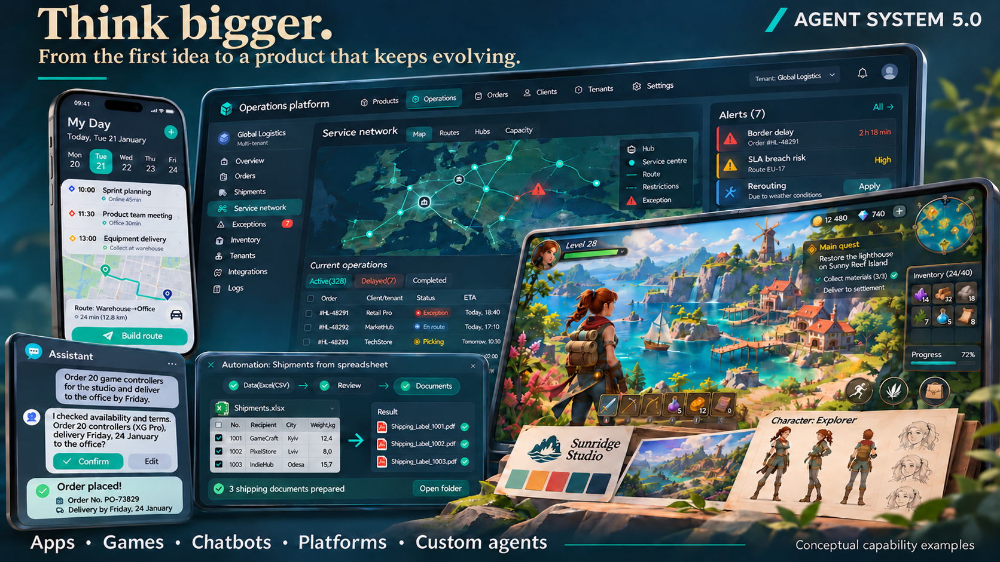
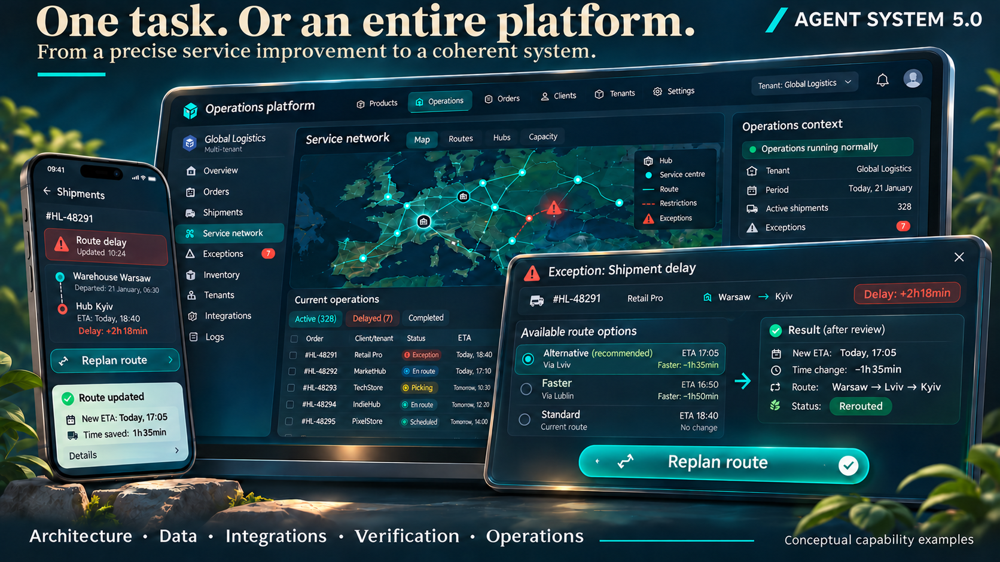
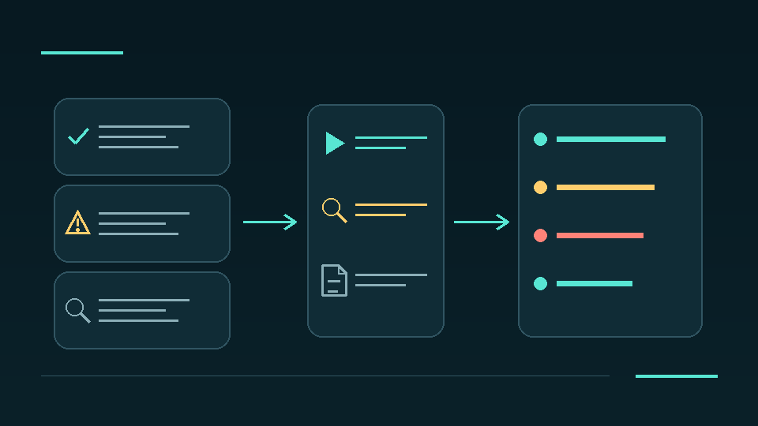

Que pouvez-vous créer avec Codex?
Partez d’une tâche concrète ou reprenez un produit existant. Ces illustrations présentent les entrées, les décisions et les résultats de parcours représentatifs.
- Ouvrir le guide
- Recherche avec sources (RAG)
- Évaluer un parcours réel
- PDF des schémas techniques
- Accueil du dépôt
- Galerie hors ligne
- Un espace de travail connecté
- My Day
- Sunridge Studio
- Assistant
- Global Logistics
- Du tableur aux documents
- Un spécialiste pour une tâche récurrente
- Recherche avec sources
- Évaluer un parcours réel
- Panneau Agent Atelier
- Cycle de vie du produit
- Le même projet se poursuit
- Votre prochaine tâche
Ces concepts illustrent quelques usages possibles du système. Les inscriptions d’origine ont été conservées. Les versions actuelles figurent sur la page d’accueil du dépôt.
Connectez-vous à GitHub et ouvrez une validation réussie pour main. Dans Artifacts, téléchargez product-showcase, extrayez Showcase.zip et ouvrez index.html.
Un espace de travail connecté
Concept de produit original · illustration en anglais


Couverture complémentaire

My Day
Concept de produit original · illustration en anglais

Déroulement technique

Sunridge Studio
Concept de produit original · illustration en anglais

Déroulement technique

Assistant
Concept de produit original · illustration en anglais

Déroulement technique

Global Logistics
Concept de produit original · illustration en anglais


Déroulement technique

Du tableur aux documents
Concept de produit original · illustration en anglais

Déroulement technique

Un spécialiste pour une tâche récurrente
Concept de produit original · illustration en anglais

Déroulement technique

Recherche avec sources

Évaluer un parcours réel

Panneau Agent Atelier

Autres concepts
Cycle de vie du produit
Concept de produit original · illustration en anglais

Le même projet se poursuit
Concept de produit original · illustration en anglais

Votre prochaine tâche
Concept de produit original · illustration en anglais